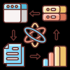

Data Science
Numbers whisper truth — I know how to listen.
Machine Learning & AI
I teach machines to think — prediction is my instinct.
C++ & Java
Where performance meets precision — I write with surgical intent.
Violin & Creative Thinking
I don’t play — I weaponize emotion into melody. Thoughtful, bold, unexpected.
Gaming Strategy
Games didn’t distract me — they trained me. I see patterns others miss.